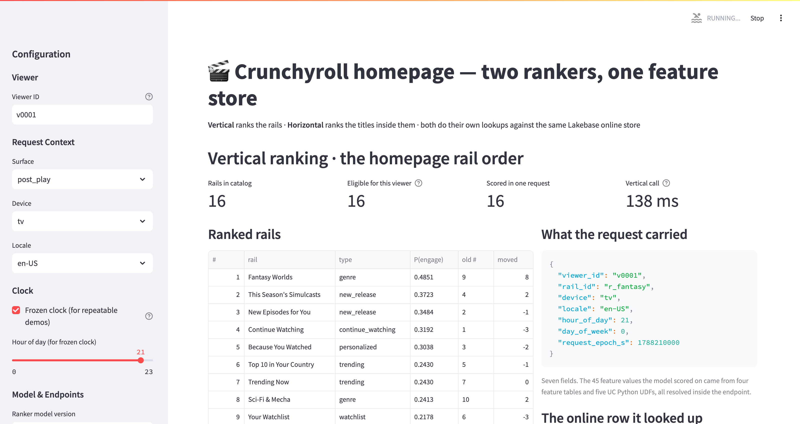
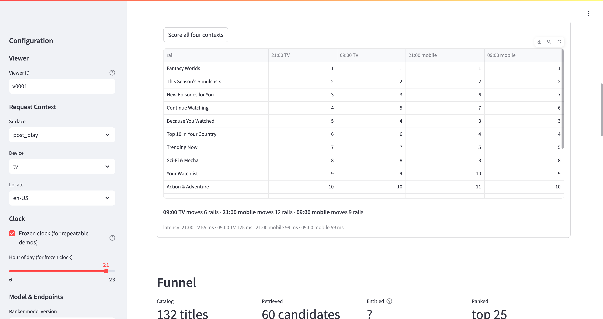

Both paths are built, and they are the same model. The batch path for November and the real-time path for later read the same feature definitions, the same training set and the same registered model version.
Every figure in this deck was measured on serverless_lakebase_praneeth_catalog.crunchyroll_demo against registered model version 11, and re-verified on 18 Sep 2026. Synthetic data — 300 viewers, 132 titles, 363,351 homepage impressions. The lift is evidence the pipeline works, not a forecast of Crunchyroll's lift.
Ordering anime within a collection.
Ordering the collections on the homepage. This POC.
The interesting number is not that we built a second ranker. It is what the second ranker cost: two feature tables and three UDFs. Four of its six feature inputs are the same governed tables the watch-next ranker already reads, with no second pipeline behind them.
Editable source: docs/architecture.drawio. The only difference between the two phases is the box the arrow from the registry lands in — and where features are read from.
| Feature table | Grain | Offline | Online | Second ranker |
|---|---|---|---|---|
| viewer_features_current | viewer | daily | yes | reused unchanged |
| recent_behavior_current | viewer | triggered | yes | reused unchanged |
| session_features_current | viewer | streaming | CONTINUOUS | reused unchanged |
| title_features | title | daily | yes | aggregated to rail grain |
| rail_features | collection | daily | yes | new |
| viewer_rail_features_ts | viewer × collection × ts | daily snapshots | latest per key | new |
The feature spec is logged inside the model, so the endpoint performs the same lookups and the same UDFs as training. Not a convention anyone has to honour — there is no second code path to keep in sync.
Four collections depend on viewer state, so the eligible set genuinely varies 14–16 per request (mean 15.4). It is applied before scoring, exactly where your service would apply it.
Registering viewer_rail_features_ts with timeseries_columns="ts" makes one table do both jobs. Offline it keeps every daily snapshot, so training reads only what was known at impression time. Published online, it deduplicates to the newest row per key.
So there is no _current mirror to keep in sync. Training and serving read the same table through the same FeatureLookup — the strongest available form of the consistency argument: not "two tables from one definition", but one table.
Asserted in the pipeline, not assumed: the run fails loudly if online row count ≠ distinct keys, because every claim about the serving path depends on it.
Every label in a homepage log was observed at a position the incumbent chose. An uncorrected model learns the incumbent and scores well for it. Inverse propensity weights come from rail_position_propensity. Without this, the lift above would be an artifact rather than a result.
"Is the lift personalization, or just a better fixed order?" Removing all 13 collection-identity features moves NDCG@5 from 0.6984 to 0.7026 — it does not drop. Spearman(full, ablated) 0.947, so the two models genuinely differ. The lift is personalization.
Point-in-time correctness via timestamp_lookup_key, verified with an isolated probe job before the architecture was chosen. Versions are integers, promotion is an alias move, deployment pins the immutable version — two separate steps.
Lakebase is not in GCP us-west1 until November. fe.score_batch() resolves the same four feature tables and five UDFs against the offline store, so nothing on this path depends on Lakebase existing.
69.9 s for 4,628 rows is dominated by Spark startup on serverless, not per-row work. We are not offering it as a capacity model. What transfers is the shape: a full refresh is O(viewers × collections); an incremental refresh is O(viewers whose features changed). At a minutes cadence only the second is viable.
CDF is enabled on all four feature tables, so "whose features moved since the last run" is a query, not a guess. Read each change feed from the last scored version, rescore only those viewers, write with replaceWhere so the rest of the table stands.
One honest asymmetry: rail_features is keyed by rail_id, so any change to it moves every viewer's order and forces a full refresh. The job detects that and says so rather than shipping a half-stale table.

45 is what the endpoint retrieves; 47 is what the estimator sees — 43 of those retrieved values plus the 4 context fields the caller sends. Two retrieved values are UDF inputs only and never reach the estimator.
The homepage service does not fetch features and does not know which tables exist. It sends a viewer, a context and the eligible collections. Everything else is the endpoint's job, because the feature spec lives inside the model.
Same viewer, same collections, same context, same model version — scored through score_batch and through the endpoint, then compared.
The delta is not noise and not a bug. cr_rail_click_recency takes request_epoch_s as an input, and the batch job and the endpoint call happened seconds apart. A time-decay feature should return a different value at a different clock. Ranks are unaffected because every collection in the request shifts by the same clock. If this number were zero, the recency feature would not be doing its job.
So the November work is not throwaway. Switching to real time is a deployment change, not a modelling change — and the ranking does not need re-validating.
Five of the model's features are request-time UDFs reading device, hour_of_day and request_epoch_s — none of which exist until a request arrives. A precomputed table has to pick one context and be wrong for the others.
| Context | Collections that move |
|---|---|
| 09:00 on TV | 5–6 of 16 |
| 21:00 on mobile | 7–12 of 16 |
| 09:00 on mobile | 9 of 16 |
All against the 21:00-on-TV order, same viewer, nothing in the feature store changing. Measured live across several runs on 18 Sep 2026 — the count itself shifts with the wall clock, because two of the five request-time features decay with time. The app prints the exact count for the run you are watching.
So the Phase 2 argument is not primarily latency. It is personalization that a precomputed table structurally cannot deliver. Precomputing every context instead multiplies the table by the number of contexts — the expensive direction at a minutes cadence.

32 collections cost the same as 4, so the automatic feature lookup batches the per-collection reads rather than issuing them serially. Three independent runs agree, including one from a different network position.
At concurrency 32 we measured ~80 req/s in a closed-loop ramp (p50 369 ms, no rejections) and ~206 req/s under open-loop overload (p50 71 ms, excess shed as 429). Same endpoint, same config, 2.6× apart. A 10-minute sustained hold showed no scale-up at all (factor 1.0), so "capacity arriving over minutes" is not supported by the current run and we are not claiming it.
What survives regardless: provision the floor for peak. Do not size against autoscaling. min_provisioned_concurrency is what you actually get.
Recovery after the spike is immediate — p50 54 ms, p95 69 ms, 4 residual 429s. No queue to drain, no lasting damage.
Measured from two vantage points on purpose: a laptop saturates at 53.8 req/s and therefore sees zero 429s in the same spike that rejects thousands in region. Benchmarking a serving endpoint from outside its region overstates headroom by roughly 4×.
| Item | Status | Detail |
|---|---|---|
| Scale at your cardinality | not demonstrated | 4,681 online keys is not 50 million. Top follow-up. |
| Training at your volume | partial | The PIT join is Spark and scales; the estimator is toPandas() + scikit-learn, single-driver. Substitution named; touches neither the feature layer nor serving. |
| Fallback path | not built | No cached previous ranking, no editorial default on timeout, no circuit breaker. Given the endpoint sheds load with 429, this is the most important thing you must build. |
| Canary / traffic split | not built | Model Serving supports it; this POC sends 100% to one version. |
| Handoff to the homepage | yours to decide | Query rail_rankings_batch directly, or populate your own cache from it. Changes the freshness contract — worth settling before November. |
| Minutes cadence at your MAU | unsized | Mechanism exists, measured at demo scale only. Needs your MAU and feature-change rate. |
| Route optimization | blocked here | Rejected by this workspace. Ours to escalate, not a platform limit. |
Feature plumbing, the point-in-time join, the online store, automatic feature lookup at serving, the registry, the endpoint, batch scoring against the offline store.
Feature definitions, the homepage impression log including rendered position, eligibility rules, candidate resolution for personalized collections, the homepage service and its fallbacks.
Freshness, capacity, retraining cadence, cost. The online store is the one component that cannot scale to zero — $15.95/day at CU_2 list, measured; this demo runs CU_1.
| # | Act | Artifact | Min |
|---|---|---|---|
| 0 | Frame the two rankings | slides | 2 |
| 1 | The shared feature store | notebook 21 output | 8 |
| 2 | Training, PIT, IPS, registry | notebook 22 + UC model page | 6 |
| 3 | Batch — the November path | notebook 26 + rail_rankings_batch | 12 |
| 4 | Online — the end goal | the app | 10 |
| 5 | Batch = online, proved | notebook 26, last section | 5 |
| 6 | Serving numbers under load | docs/serving_benchmark.md | 7 |
| 7 | Gaps and ownership split | slides | 5 |
"Yes, both — and they are the same model. We ran batch and real time against the same registered version and compared them: identical collection order, 16 of 16, Spearman 1.0."
Full detail: docs/ask_alignment.md (line-by-line against your written ask) · docs/batch_and_online.md (the migration) · docs/serving_benchmark.md (all load-test tables) · docs/verification_log.md (66 checks, most of them defects a live run surfaced) · docs/demo_script.md (this running order, expanded).